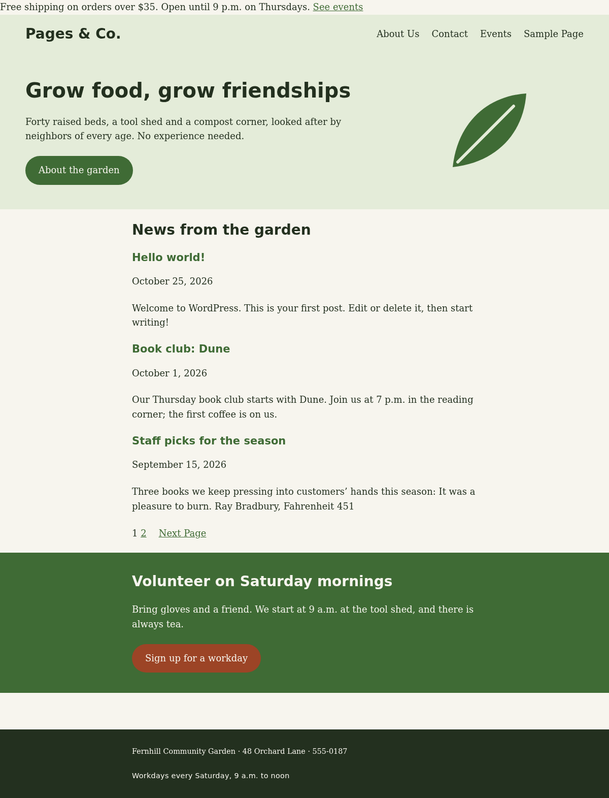

How to run the last session of Part 1: a studio for the Part 1 project (the Fernhill Community Garden block theme), the timed Part 1 assessment (finishing the Brightwater Swim School classic theme, 60 minutes, alone), and a review that turns both into a map of Modules 1 to 4. Rubrics, scoring sheets and answer notes are in final-assessment.html. When Part 1 runs on its own, this is the course close.
final-assessment.html at the kit root (sections "Part 1 Project" and "Part 1 Assessment"). Print the scoring sheets before the session.labs/module-08/: p1-project/ (Session 7 handed it out), p1-assessment/ (hold it back until 1:25 if you can) and p1-review/.Learners who are behind on the project will ask to keep building through the break. Do not let them: the assessment starts at 1:25 for everyone, and the project has a week left. Say at 0:10: "The studio ends at the break, whatever happens. Your project is due in a week; the assessment is today." Second risk: a learner whose site is broken (the assessment needs a working course site at after:lesson_13). Check every machine during the status round, and keep one spare laptop with a working site, or let the learner pair-run the self-check on yours and hand in code only.
final-assessment.html), one per learner, and the assessment's BRIEF.md (labs/module-08/p1-assessment/BRIEF.md) on paper if you prefer paper.labs/ folder in Session 1, learners already have p1-assessment/ (without the solution); that is acceptable (open book, and the score comes from the code and the explanation), but the cleaner way is to hold the folder back: put labs/module-08/p1-assessment/brightwater_starter/, test_brightwater.php and BRIEF.md on a USB stick or a shared folder and release them at 1:25. Never hand out brightwater_solution/ or fernhill_solution/.python3 labs/check_labs.py module-08 (every line PASS: the review pair and handout, and both self-checks once with the starter and once with the solution, on fresh after:lesson_13 sites). With your own project: WP_LABS_COMPOSE=~/pagesco-dev python3 labs/check_labs.py module-08 (labs/README.md); your site must be at the end of Lesson 4.3.final-assessment.html (for you, not the projector).| Module | What learners can do | Project (R) · Assessment (T) | Lessons |
|---|---|---|---|
| 1 | WordPress as a PHP application; the local site; PHP the WordPress way (escaping, i18n, prefixes, standards) | R8, every task; T4 | 1.1 to 1.3 |
| 2 | The content model, the database, hooks (actions, filters, priority) | R5, R6; T1 to T3 | 2.1 to 2.3 |
| 3 | Block themes: anatomy and the hierarchy, theme.json, templates and parts, patterns, variations, child themes | R1 to R4, R7 | 3.1 to 3.4 |
| 4 | Classic themes: the Loop and template tags, custom queries and pre_get_posts, functions.php | R5, R6; T1 to T5 | 4.1 to 4.3 |
| Clock | Minutes | Segment | What happens |
|---|---|---|---|
| 0:00 | 10 | Warm-up | Five retrieval questions on Part 1; a status round: every learner reads out the last line of their project self-check. |
| 0:10 | 15 | Part 1 review | The Part 1 map on one board; request_map_solution.sh on the projector; two predict-then-run items; questions from the room. |
| 0:25 | 50 | Part 1 project studio | Milestones 4 to 6 of the Fernhill theme: triage by self-check number, three-minute conferences, the per-URL check. |
| 1:15 | 10 | Break | Set out the assessment files (or a USB stick) during the break. Projects closed. |
| 1:25 | 10 | Part 1 assessment: setup | Rules, the bug reports, the hand-in; every learner copies brightwater_starter, activates it, runs the self-check (Checks passed: 2 of 10). |
| 1:35 | 60 | Part 1 assessment | Brightwater, alone, open book, timed: tasks T1 to T5, the stretch if time. Hand-in at 2:35. |
| 2:35 | 15 | Review and showcase | After the hand-in: the three bug reports explained, two or three Fernhill front pages shown, a Part 1 retrospective. |
| 2:50 | 10 | Wrap-up | Exit ticket, the project due date, Part 2 preparation (or the course close when Part 1 runs alone). |
| Total | 180 | Ends at 3:00. |
In the room. No lesson: 50 minutes of project studio, 70 minutes of assessment (setup and work), 25 minutes of review before and after, the warm-up, the break and the wrap-up. The project takes about 3 hours 45 minutes in all: about 35 minutes in Session 7, 50 today, the rest at home (Milestones 2 to 4 between the sessions, the finish in the week after today). The assessment is sized for 50 minutes of tasks plus 10 for setup checks and the hand-in.
Goes home (about 2 to 3 hours). Finish the Fernhill theme (Milestones 5 and 6 and anything left; due one week from today, with NOTES.md); the Part 1 retrospective journal; the self-check items not done in the room; Part 2 preparation (below) or, when Part 1 runs alone, nothing else.
Protect, in this order: the full 60 minutes of the assessment (start it on time, at 1:35 at the latest); the studio's triage (every learner leaves knowing their next milestone); the review of the three bug reports (it is where the assessment teaches). Cut first: the predict items in the review, then the showcase (keep the bug walkthrough), then the warm-up questions (keep the status round).
| 5m | Five retrieval questions (workbook W1 to W5), answers out loud |
| 5m | Status round: every learner reads out the last line of test_fernhill.php; you write the numbers on the board |
wp theme activate pagesco and the self-check of Lesson 4.3's end (wp theme list) first.cp labs/module-08/p1-review/request_map_solution.sh wordpress/ docker compose run --rm wpcli sh request_map_solution.sh
/ 200 home blog /page/2/ 404 error404 /book-club-dune/ 200 single single-post /about/ 200 page-template-default page /category/news/ 200 archive category category-news /?s=dune 200 search search-results /no-such-path/ 404 error404Two lines to stop on:
/page/2/ is a 404 on pagesco (ten posts per page, four posts: there is no page 2; on Fernhill, three per page, there is), and /about/ is page, which a block theme answers with page.html and a classic theme with singular.php (Lessons 3.1 and 4.1).curl -s -o /dev/null -w '%{http_code}\n' http://localhost:8080/page/2/
wp eval '$q = new WP_Query( array( "post_type" => "page", "orderby" => "title", "order" => "ASC" ) );
echo implode( ", ", wp_list_pluck( $q->posts, "post_title" ) ), "\n";'
404 About Us, Contact, Events, Sample PageP3: a WP_Query of pages, ordered by title, finds only PUBLISHED pages (the Privacy Policy is a draft): the default post_status for an anonymous query is publish.
labs/module-08/p1-review/request_map_starter.sh (the same report, two TODOs) and labs/module-08/p1-review/debug_query_review.php (a latest-news list with one loud bug and three silent ones; a good warm-up for Task 5 of the assessment, so offer it before 1:25, not during). The answer key has both.
Answers: Q1 C) front-page.html; Q2 ABx; Q3 B) templates/index.html; Q4 twentytwentyfive pagesco-tt5-child; Q5 A) The database copy of the part (a wp_template_part post) wins over the file: copy what you want into the file, then reset or delete the copy; Q6 D) 3; Q7 B) 2 3; Q8 C) esc_url(); Q9 Book club: Dune<h2></h2>; Q10 D) wp_enqueue_scripts; Q11 A) A style variation the site owner can switch on for the whole site; Q12 --wp--preset--color--oxblood: #7a2e2e. Full set with explanations in the Answer Key.
| 5m | Goals for the studio, by status group (board) |
| 40m | Work, with three-minute conferences (low numbers first); the self-check after every milestone |
| 5m | Everyone: the per-URL check and one line in NOTES.md about what is left |
hero.php as the model: one string at a time.| Symptom | Cause | Coach with |
|---|---|---|
Checks 2, 3, 4 and 6 TODO at once, a wp_json_file_decode() notice | A trailing comma in theme.json | Lesson 3.2, Mistake 1: the notice names the file; JSON allows no comma before } |
| Check 9 TODO, the header missing on the front page only | A part slug typo in one template (heder) | Lesson 3.2, Mistake 2: visitors see nothing, a logged-in admin sees "Template part has been deleted or is unavailable" |
Check 10 TODO, the stylesheet loads with ?ver=7.1.3 | No version argument | Lesson 4.3, Mistake 2: the theme's Version, read with wp_get_theme() |
All 12 OK, but wp eval shows 3 posts for a query that asked for 10 | pre_get_posts without the main-query guard | Lesson 4.2, Mistake 3: the self-check cannot see it; the rubric row can |
| Edits to a template have no effect | A Site Editor copy in the database | Lesson 3.2, Mistake 3; rule R8 |
| Patterns missing from the inserter | The category not registered, or Categories header without fernhill | R3/R5; wp eval with WP_Block_Patterns_Registry (the answer notes) |
The self-check of the model solution:
Fernhill self-check (Part 1 project, BRIEF.md) OK 1 Theme header: Fernhill 1.0.0, text domain fernhill, requires WordPress 7.1 and a PHP version OK 2 A block theme with a valid theme.json, version 3 OK 3 Palette: base, contrast, primary, secondary, accent (in that order); the default palette off OK 4 Layout: content 680px, wide 1100px OK 5 Templates: index, front-page, single, page, 404 OK 6 Template parts: header (area header) and footer (area footer) OK 7 Patterns: fernhill/hero and fernhill/volunteer-call in the fernhill category; every string translatable with fernhill OK 8 Style variation: Autumn OK 9 Front page: header, main, the hero heading, the volunteer heading, footer OK 10 Stylesheet: fernhill-style, assets/css/fernhill.css?ver=1.0.0 OK 11 Main query: 3 posts on the front page, 1 on /page/2/ (now: 3 and 1) OK 12 404: status 404 and the heading "This path is overgrown" Checks passed: 12 of 12
The per-URL check of Lesson 3.2, adapted to Fernhill's landmarks (it is in the workbook):
for url in / /page/2/ /hello-world/ /about/ /category/news/ "/?s=garden" /no-such-path/; do
page=$(curl -s -w '\n%{http_code}' "http://localhost:8080$url")
echo "$url $(echo "$page" | tail -n 1) header:$(echo "$page" | grep -c '<header class="wp-block-template-part"') main:$(echo "$page" | grep -c '<main ') footer:$(echo "$page" | grep -c '<footer class="wp-block-template-part"') h1: $(echo "$page" | grep -o '<h1[^>]*>.*</h1>' | head -n 1 | sed 's/<[^>]*>//g')"
done/ 200 header:1 main:1 footer:1 h1: Grow food, grow friendships /page/2/ 200 header:1 main:1 footer:1 h1: Grow food, grow friendships /hello-world/ 200 header:1 main:1 footer:1 h1: Hello world! /about/ 200 header:1 main:1 footer:1 h1: About Us /category/news/ 200 header:1 main:1 footer:1 h1: News /?s=garden 200 header:1 main:1 footer:1 h1: Search results for: “garden” /no-such-path/ 404 header:1 main:1 footer:1 h1: This path is overgrown
/?s=garden has an h1 here because the model solution adds the stretch search.html; without it the search page falls back to index.html, whose archive title prints nothing on a search (fine for Met, a good conversation for Exemplary). The front page, as the model solution draws it on the course site (the thin line at the top is the course's store notice from its must-use plugin):

| 10m | Setup at 1:25: rules, the bug reports, the hand-in; copy, activate, self-check (2 of 10) |
| 60m | Work, 1:35 to 2:35; time calls at 2:05, 2:25 and 2:30 |
cp -r labs/module-08/p1-assessment/brightwater_starter wordpress/wp-content/themes/brightwater, wp theme activate brightwater, cp labs/module-08/p1-assessment/test_brightwater.php wordpress/, wp eval-file --use-include test_brightwater.php. Done = Checks passed: 2 of 10 on every screen.Success: Switched to 'Brightwater' theme. Brightwater self-check (Part 1 assessment, BRIEF.md) OK 1 A classic theme: Brightwater, text domain brightwater TODO 2 T1 Title: title-tag support, exactly one <title> (now: 1) TODO 3 T1 wp_body_open(): the store notice band from mu-plugins/pagesco-site.php appears TODO 4 T2 Stylesheet: brightwater-style, style.css?ver=1.0.0 TODO 5 T1 Menu: the primary location shows About Us, Events, Contact in the header nav TODO 6 T3 Blog home: 2 posts with linked h2 titles, a link to page 2 (now: 0 posts, 0 linked titles) TODO 7 T3 /page/2/: status 200 and the other 2 posts TODO 8 T4 Search: the term is printed as text (<b>), never as HTML OK 9 T5 Related news on /book-club-dune/: Staff picks, then Welcome TODO 10 T5 Post navigation on /book-club-dune/: previous Staff picks, next Hello world! Stretch: footer widget area not registered Checks passed: 2 of 10
Success: Switched to 'Brightwater' theme. Brightwater self-check (Part 1 assessment, BRIEF.md) OK 1 A classic theme: Brightwater, text domain brightwater OK 2 T1 Title: title-tag support, exactly one <title> (now: 1) OK 3 T1 wp_body_open(): the store notice band from mu-plugins/pagesco-site.php appears OK 4 T2 Stylesheet: brightwater-style, style.css?ver=1.0.0 OK 5 T1 Menu: the primary location shows About Us, Events, Contact in the header nav OK 6 T3 Blog home: 2 posts with linked h2 titles, a link to page 2 (now: 2 posts, 2 linked titles) OK 7 T3 /page/2/: status 200 and the other 2 posts OK 8 T4 Search: the term is printed as text (<b>), never as HTML OK 9 T5 Related news on /book-club-dune/: Staff picks, then Welcome OK 10 T5 Post navigation on /book-club-dune/: previous Staff picks, next Hello world! Stretch: footer widget area registered Checks passed: 10 of 10
The bugs behind the three reports: the header asks for a menu location named main while the theme registers primary (T1); search.php prints get_search_query( false ) raw (T4); related-news.php never calls wp_reset_postdata(), so the_post_navigation() works from the last related post instead of the post on the screen (T5). The full answer notes, the traps and the rubric are in final-assessment.html.
| 6m | The three bug reports, explained (after every zip is in) |
| 6m | Two or three Fernhill front pages on the projector, one minute each: one decision each learner made |
| 3m | Part 1 retrospective: one thing learned, one to review |
register_nav_menus() names the location, wp_nav_menu( theme_location ) and has_nav_menu() ask for it: the names must match, and a typo is silent (Lesson 4.3, Mistake 3).<h1 class="search-title">Results for: <b>water</b></h1>. esc_html() at the echo, or get_search_query() with its default escaping. Every value from a visitor is untrusted (Lessons 1.3 and 5.3).wp_reset_postdata() Dune's navigation is its own: Staff picks for the season Hello world! (Lesson 4.2, Mistake 2)."Part 1 took you from a local site to three kinds of theme. Which skill would you now trust yourself with on a client's site, and which would you look up first?" Two or three answers out loud; the rest go in the journal.
esc_html_e() even though you wrote it? Answer: it makes the text translatable (the text domain) and escapes it at output; a translation is data you did not write.NOTES.md). Due one week from today: the zip fernhill-<yourname>.zip with NOTES.md and the last self-check output (labs/module-08/p1-project/BRIEF.md, Hand-in).wp theme activate pagesco (Lesson 5.1 starts from it), Node 24 on the computer or docker pull node:24, docker pull composer:2; Session 9 opens with check_environment.sh --part2. A site that is not at the end of Lesson 4.3 (unfinished, or broken by experiments) can start Part 2 from the course download pagesco-part2-start.zip (its README.txt: about a minute; it saves the old database first).labs/module-08/p1-review/debug_query_review.php and the request-map lab if you did not reach them.npm install of Module 6 later.labs/module-08/p1-review/debug_query_review.php together before the break: one loud bug, three silent ones; the silent ones are what Task 5 is about.wp post list --post_type=wp_global_styles) and reset it: rule R8 in one minute.the_permalink() with esc_url( get_permalink() ).